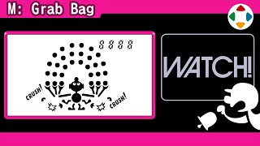
速览
Game & Watch 是任天堂 1980 年起发售的 LSI 游戏系列。开发《大乱斗》时，樱井拿到了宝贵的液晶图案资料（如《特别版》的平面世界 X 等就参考了它）。这次经任天堂特别许可，展示其中一些图案。G&W 的液晶上每个图案都在固定位置，通过点亮/熄灭来表现动作，所以角色所有姿势、所有位置的图会同时印在一块液晶上，还要互不重叠地巧妙排布。依次展示：《Fire》(1980)、《Ball》(1980)、《Flagman》(1980)、《Manhole》(1981)、《Helmet》(1981)、《Chef》(1981)、《Oil Panic》(1982)、《Donkey Kong》(1982)、《Green House》(1982)、《Manhole（新宽屏）》、《Lifeboat》(1983)、《Pinball》(1983)、《Mario's Cement Factory》(1983)、《Mario's Bombs Away》(1983) 等。光是看着就很有趣，能感受到那个时代特有的匠心与风格。
1. Game & Watch 与《大乱斗》 0:06
Game & Watch 是任天堂 1980 年起发售的 LSI 游戏系列。开发《大乱斗》时，樱井拿到了宝贵的液晶图案资料。
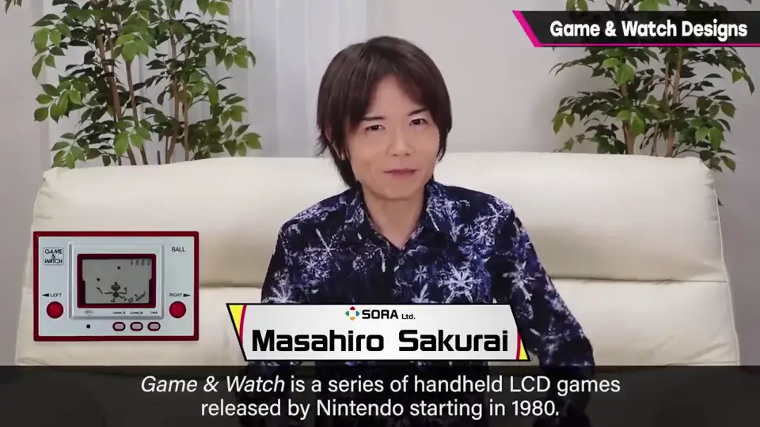
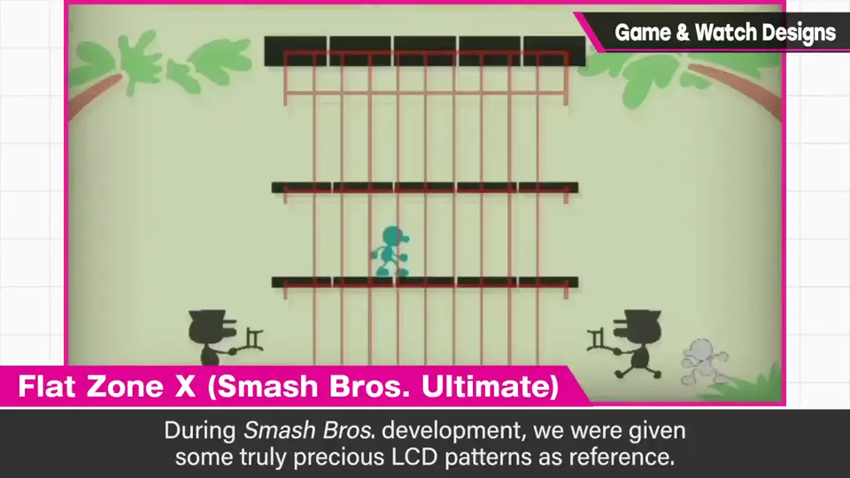
这次经任天堂特别许可，展示其中一些图案。
2. 液晶图案的原理 0:33
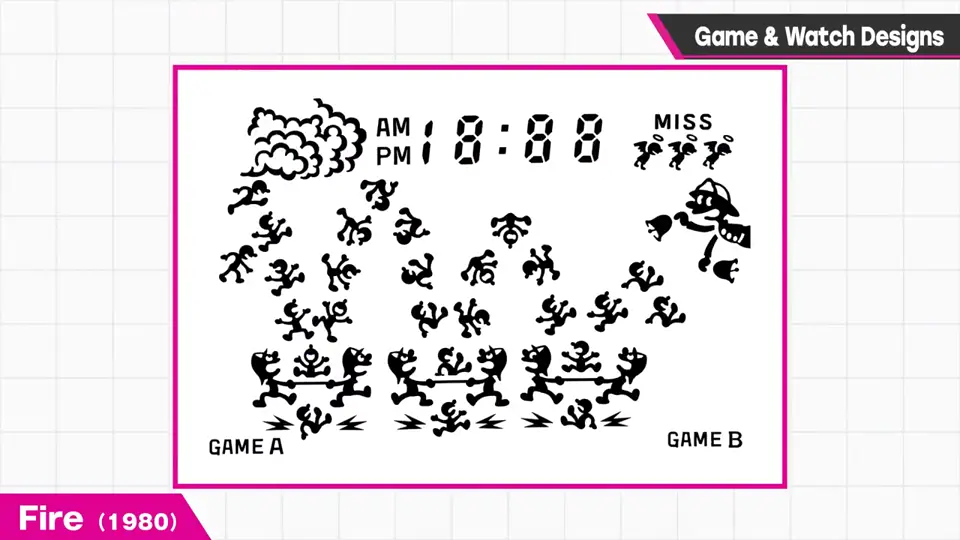
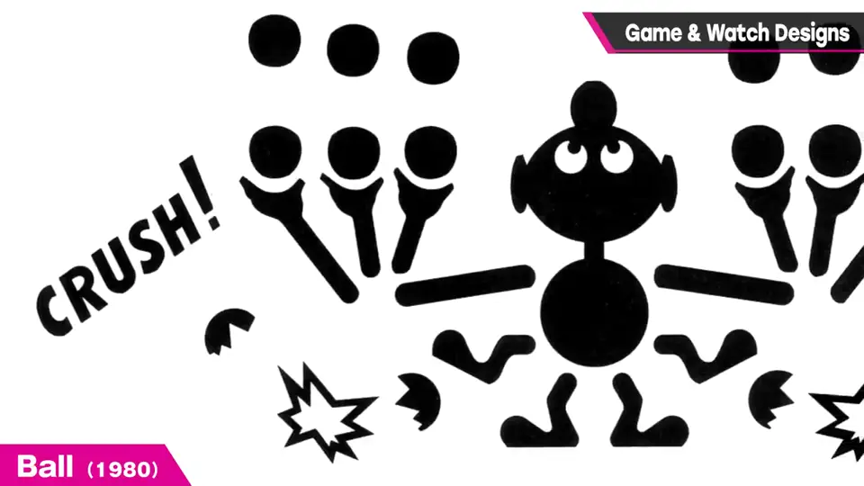
3. 1980～1981 1:00
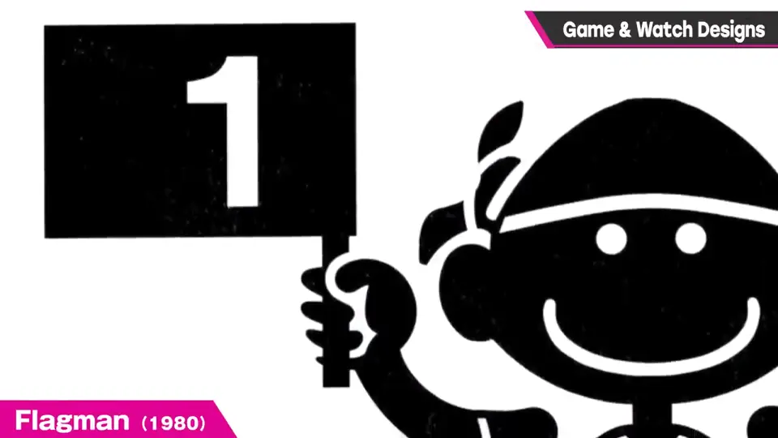
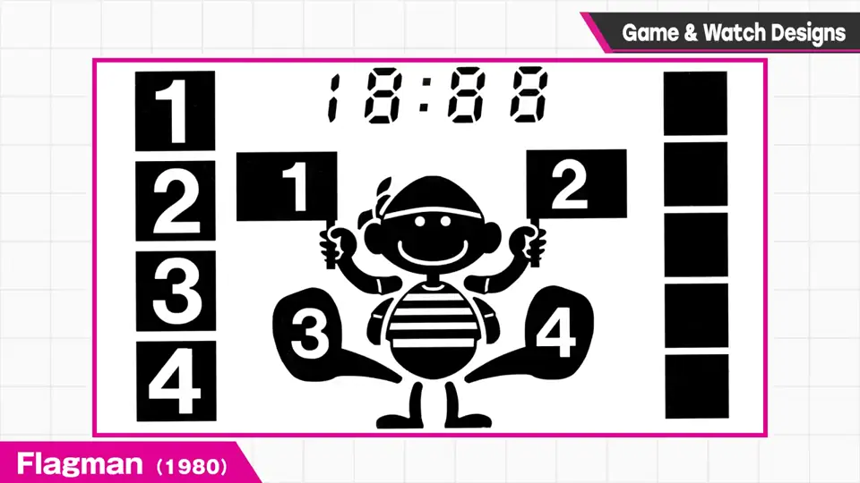
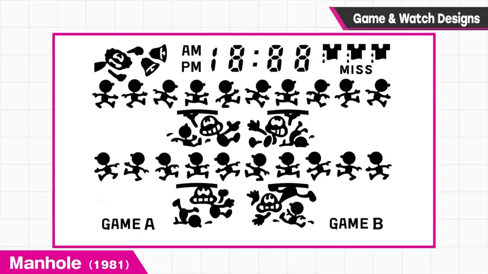
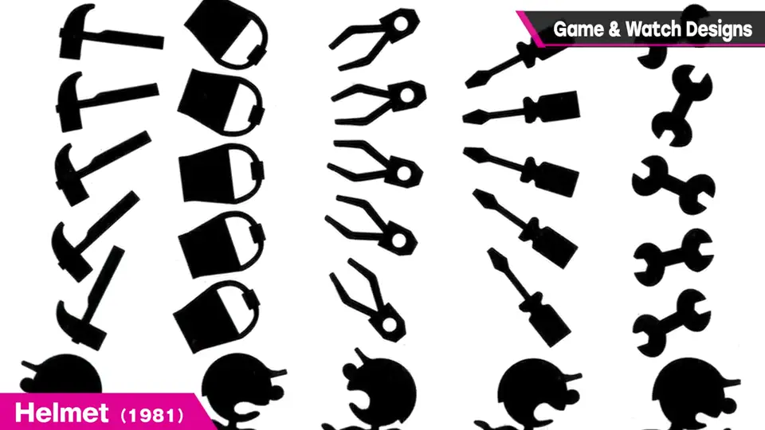
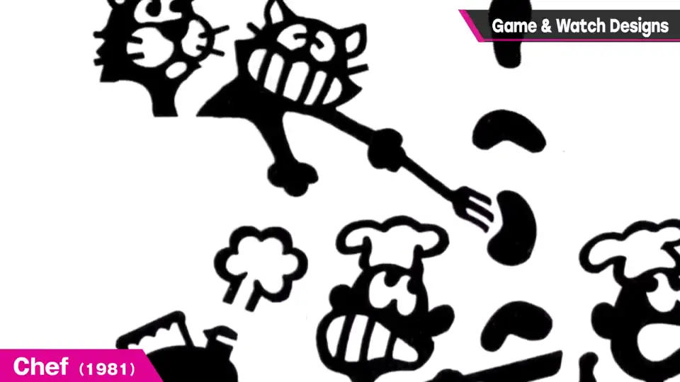
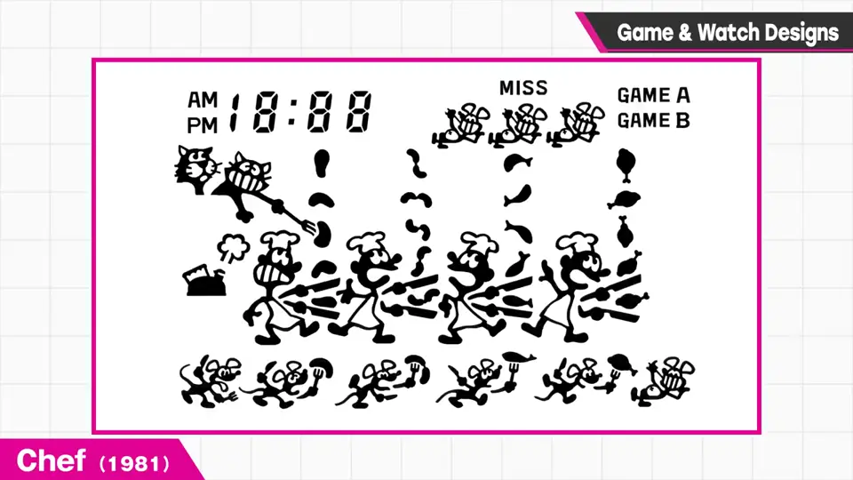
4. 1982～1983 2:10
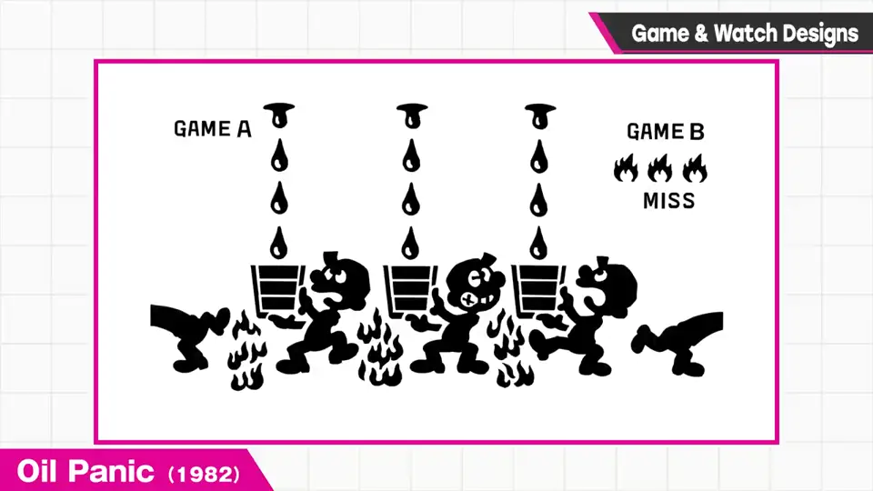
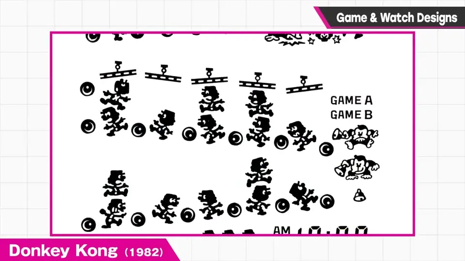
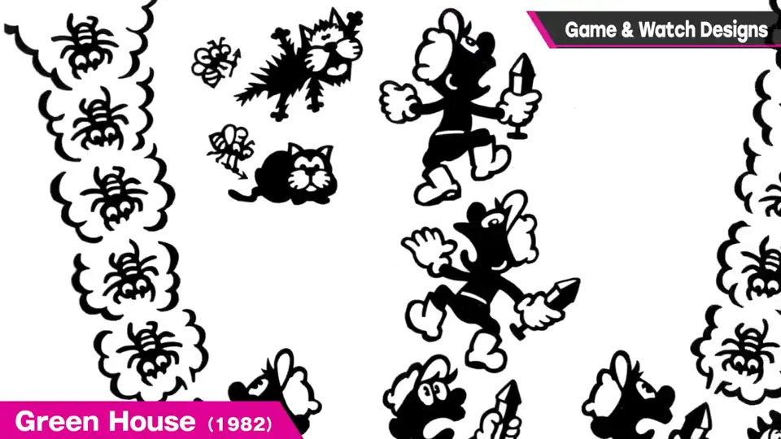
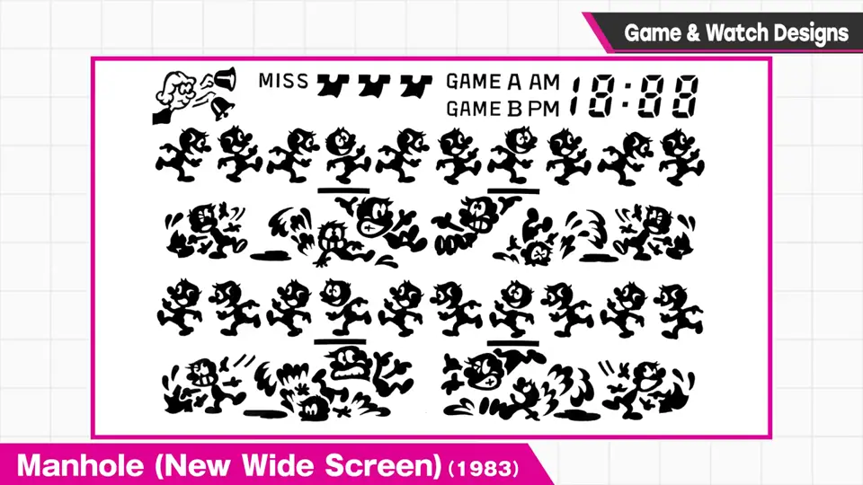
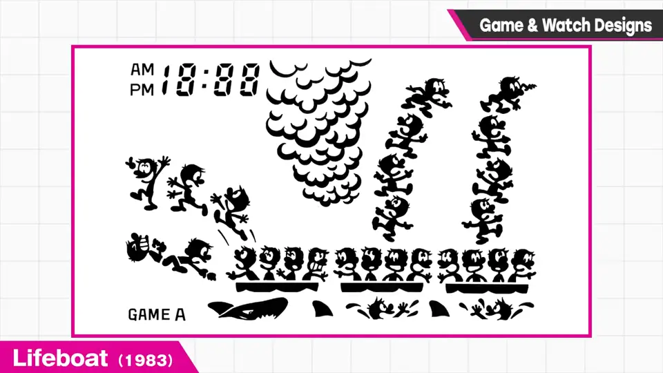
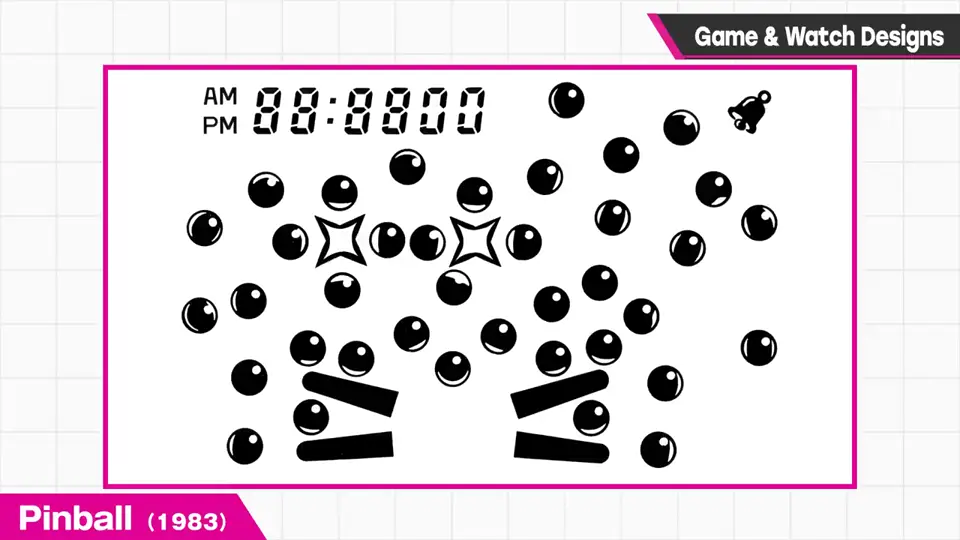
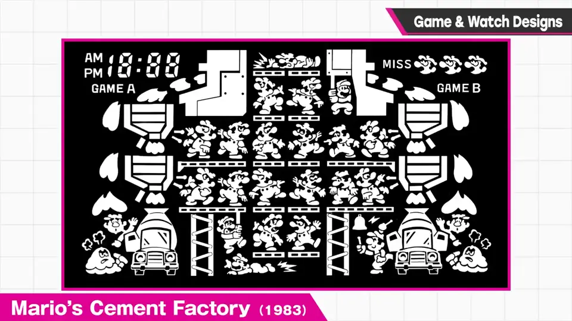
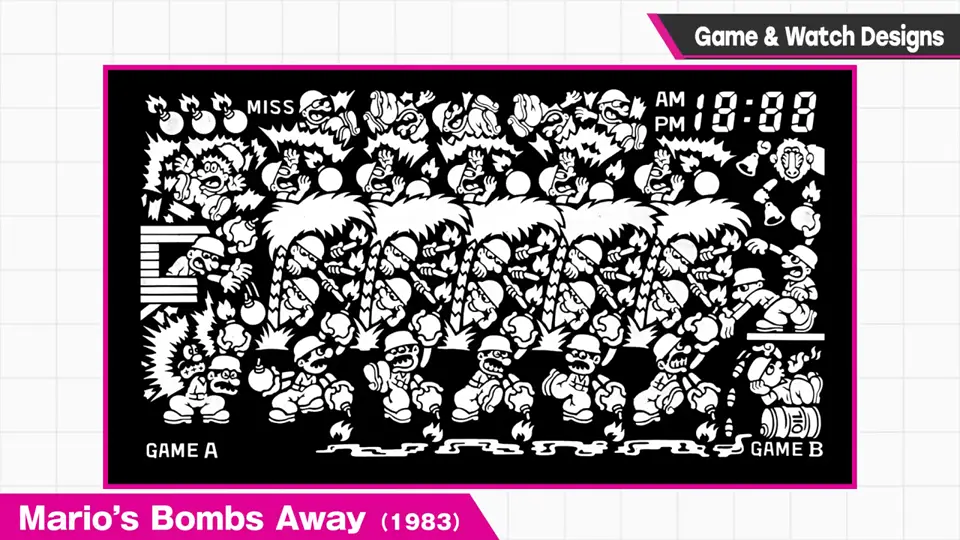
5. 时代的匠心 4:08
光是看着就很有趣，能感受到那个时代特有的匠心与风格。
自测题
1. Game & Watch 的液晶如何表现动作？
每个图案在固定位置，靠点亮/熄灭来表现；所有姿势同时印在液晶上。 0:44
2. 樱井为什么会有这些液晶图案资料？
开发《大乱斗》时作为参考资料获得（用于 Mr. Game & Watch、平面世界等）。 0:11
3. G&W 液晶图案排布需要满足什么条件？
所有姿势、所有位置的图案要互不重叠地排在同一块液晶上。 1:17